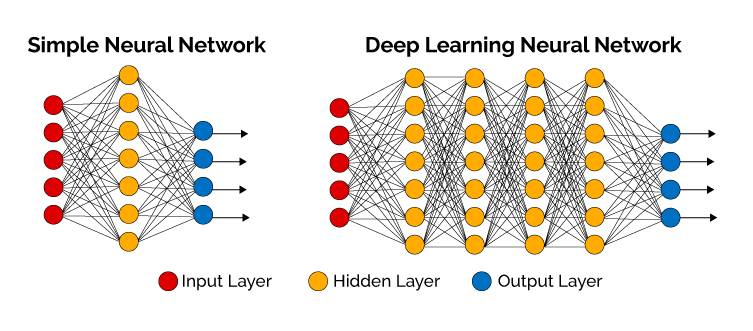
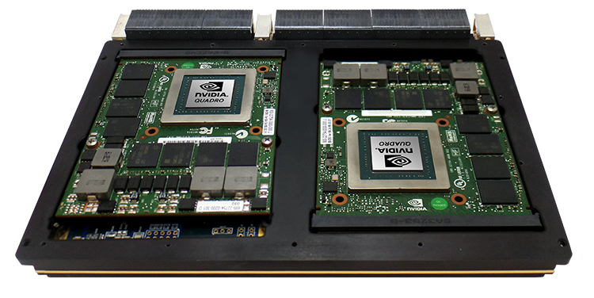

앞서 설명했다시피, 을 수행하기 위해선 cpu보단 gpu가 알맞으며 엔비디아는 이를 이용해 라는 인공지능 개발 전용 gpu를 개발하였다.
엔비디아의 GPGPU가 인공지능 연구의 대세로 자리잡게 된 결정적인 계기는 2012년의 일이었다. 당시 인공지능 분야에서 세계 최고 권위자인 앤드류 응 교수는 구글과 함께 cpu를 이용한 인공지능 시스템인 구글 브레인을 설계하기로 하였다.
이를 알게된 엔비디아가 앤드류 응 교수에게 cpu가 아닌 GPGPU를 이용해 인공지능 시스템을 구축하면 훨씬 더 저렴한 가격에 같은 성능의 인공지능 시스템 구축이 가능하다 하였고 앤드류 응 교수가 엔비디아의 GPGPU를 이용하여 인공지능 시스템을 구축한 결과와 cpu를 이용하여 인공지능 시스템을 구축한 결과를 함께 발표하면서부터 cpu를 제치고 엔비디아의 GPGPU가 인공지능 연구의 대세로 등극하게 되었다. 앤드류 응 교수가 발표한 결과를 다음 표로 확인해보자.
서버대수
하드웨어 가격
필요전력
CPU
1000대
50억원
60만 와트
GPGPU
3대
3300만원
4000와트
위의 표에서 보듯이 같은 성능의 인공지능 시스템임에도 불구하고 CPU를 사용한 경우에 비해 GPGPU를 사용한 경우가 압도적인 효율을 자랑하고 있음을 알 수 있다. 위의 결과를 확인한 전 세계 인공지능 연구자들은 모두 엔비디아의 GPGPU를 인공지능 개발 도구로 채택하기 시작했다.
--설명란-- 제이쿼리 문법으로 버튼을 클릭하면 각 버튼에 해당하는 이미지가 fadeIn()했다가 이미지를 클릭하면 fadeOut()하도록 하였습니다.